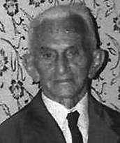

Em Porto Nacional, destacou-se como professor, inspetor federal de ensino e jornalista. Foi um dos fundadores e presidente da Associação Tocantinense de Imprensa na década de 1950. Também foi um dos redatores do jornal "O Estado do Tocantins", importante veículo da região. Aposentado em 1963, dedicou-se integralmente ao jornalismo e à produção cultural. Em 1977, recebeu o título de "Cidadão Portuense" pela Câmara Municipal de Porto Nacional. Mudou-se para Goiânia em 1982, onde faleceu em 15 de outubro de 1984. Escreveu obras importantes, como o "Manifesto Tocantinense", e é Patrono da Cadeira 36 da Academia Tocantinense de Letras. Embora tenha grande relevância regional, sua biografia ainda é pouco conhecida em enciclopédias nacionais, sendo mais estudada em trabalhos locais e regionais.
Fonte: Mário Ribeiro Martins, Retrato da Academia Tocantinense de Letras, 2005.
